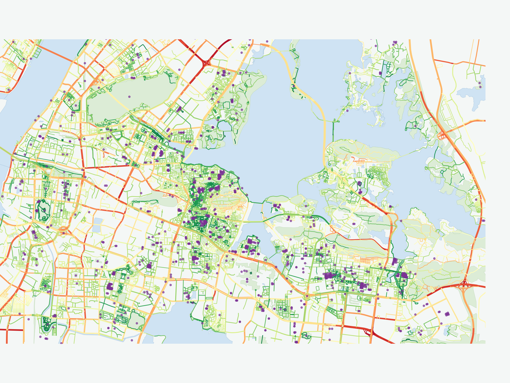

起点
起
武汉大学 · 八一路珞珈山
114.3547, 30.5342
目标距离
3 km
5 km
10 km
偏好
尽量绿荫 / 滨水
避开机动车主干道
尽量平坦
洗手间 / 补给点

东湖片区 · 14,684 段评分路网
慢跑适宜性
30 差60 中85 好
● 运动场地▬ 水体 / 绿地
推荐环线
82
/ 100
很适宜
距离5.2 km
预计用时32 min
绿地 / 滨水68%
累计爬升34 m
过街口12
补给点3
设施分偏低是数据问题：OSM 在武汉的体育设施与补给点覆盖弱于商业地图，
不代表该路线真的缺设施。坡度来自 SRTM 30 m，城区精度约 ±1 个百分点。